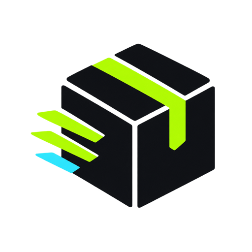

Debug flaky tests and bugs
Charts stay supportive. Rows and messages carry the work.
LEVELRUN IDJOB NAMEMESSAGE
INFO6453833code-coverageCache lookup · pnpm-lock-v4 hit
ERROR6453821database-migrationsConnection refused at localhost:5432
The visual system keeps the reference's dense scan pattern while giving Black Box its own mark, colors, wording, and icon source. The first product surface is trusted CI visibility for runs, logs, runners, cache, and host health.

Transparent generated asset used in the application rail and product heading.
--bgpage canvas--sidenavigation--canvaswork surface--blueactive data--cyanhost and cache--limeBlack Box identity--greensuccess and healthy--redfailure and error--yellowwarningCharts stay supportive. Rows and messages carry the work.